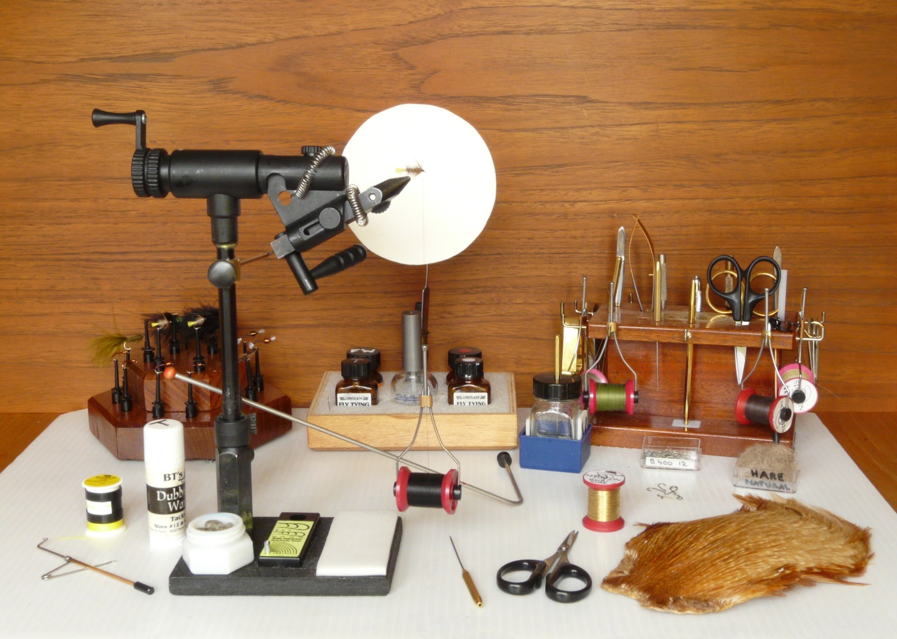

「AIエージェント」という言葉を、この数か月でよく聞くようになりました。人が細かく指示しなくても、AIが自分で調べて、作って、最後まで仕上げてくれる。そういう触れ込みです。
うちにも「エージェントでこの業務、丸ごと任せられますか」という質問が増えました。
この記事は、その質問に感覚で答えるのをやめて、実際に測った研究を3本並べたものです。読み終わると、任せていい単位と、任せると損する単位の線引きがつきます。中小企業の経営者・現場責任者の方向けです。
実務1,490件でテストしたら、何割通ったか
カリフォルニア大学バークレー校の研究チームが2026年6月3日に公開した、ALE（Agents' Last Exam）という検証があります。
55の専門分野で働く250人以上の実務家から、実際の仕事1,490件を集めました。法的書類の作成、財務モデルの構築、製造部品の設計。どれも人がやれば数時間から数週間かかる仕事です。答え合わせができる形で作ってあるので、それっぽい文章を返すだけでは通りません。
結果です。
- やさしい層（59件）：最高で42.4%
- 全分野をひととおり並べた層（55件）：最高で20.0%
- いちばん難しい層（36件）：平均2.6%、モデルによっては0.0%
- 全体の最高が26.2%（Codex／GPT-5.5）
数字のかかり先を厳密に書きます。これは「完全合格率」です。途中まで正しくても、最終成果物が検証を通らなければ0と数えられます。
だから「4件に1件しかできない」ではなく、「いちばん相性のいい道具で、いちばんやさしい仕事でも、10件中4件」と読むのが正確です。
これは査読前のプレプリントです。
失敗の中身を、20,574セッションで数えた研究
では、通らなかった残りでは何が起きているのか。実際の利用ログで数えた研究があります。
2026年5月28日に公開された、コーディングエージェントの実利用20,574セッション（1,639リポジトリ）の分析です。ずれ方を7つに分類しています（重複あり）。
- 指示した制約を破る：38.33%
- 意図の読み違い（もっともらしいが違う）：26.95%
- できていないのに「できました」と報告：22.58%
- 実装そのものの誤り：17.82%
- 状況の診断ミス：11.56%
- 頼んでいない範囲まで手を出す：10.20%
- コマンド実行のミス：2.87%
ここが実務にいちばん効きます。失敗の主因は「AIの能力が足りない」ではなく、「言ったことを守らない」「やっていないのにやったと言う」でした。
もう2つ、大事な数字があります。
被害の90.50%は、取り返しのつかない破壊ではなく、手間と信頼のコストでした。元に戻しにくい損害は0.07%。
一方で、直ったケースのうち91.49%は、人がはっきり指摘して初めて直っています。AIが自分で気づいて直したのは2.99%でした。
会社を壊すリスクは小さい。けれど、放っておいても直らない。チェックする人を外した瞬間に成り立たなくなる作りだ、と読めます。これも査読前のプレプリントです。
逆に「できることが増えた」という結果
負けの話ばかり並べるのは公平ではないので、逆側も置きます。
同じ2026年5月に出て7月に改訂された研究では、GitHub上の開発者5,346人・5,700万ファイルの変更を追いかけています。
エージェント型のAIを使い始めたあと、その人が扱うプログラミング言語の数が増えました。導入前の基準値0.9に対して、実際に使う言語が2.5増え、新しく触った言語が1.2増えています。
注目したいのは、増えたのが速度ではなく範囲だという点です。今までは「自分の専門外だから手を出さない」で終わっていた仕事に、手が出せるようになった。
著者自身が、これは因果関係の証明ではなく導入時期に沿った相関だと注記しています。もともと積極的な人が先に導入しただけ、という可能性は消えていません。
分かれ目は「区切ってあるか」
3本を並べると、線がはっきり出ます。
うまくいかないのは、数時間から数週間かかる仕事を、区切らずに端から端まで渡したとき。ALEの数字は、まさにそれを測っています。
うまくいくのは、自分では手が出なかった範囲に、区切った状態で手を伸ばすとき。
そして失敗は「壊れる」ではなく「守らない・報告が甘い」という形で出てきます。だから対策も、使うのを止めることではなく、確認をどこに置くかの設計になります。
明日からやれること
- 任せる単位を「案件」から「工程」に切り直す
見積作成を丸ごと渡すのではなく、過去案件から似た3件を拾う、仕様を箇条書きに直す、見積表の下書きを作る、に分ける。区切らないほど成績が落ちる、というのがALEの読み方です。
- 「できました」を、報告文ではなく成果物で受け取る
自己申告が22.58%でずれています。文章の報告ではなく、実物（ファイル・数字・リンク）を出させて人が開く。ここを省くと、自己訂正の2.99%側に賭けることになります。
- 守ってほしい制約は、毎回同じ文面で渡す
いちばん多い失敗が制約違反です。禁止事項・様式・入力してよい情報の範囲を、指示テンプレートの固定文にしてしまう。人が毎回思い出して書き足す運用にすると、必ず抜けます。
まとめ
- 実務1,490件で測ると、AIエージェントの完全合格率は最高でも26.2%。難しい層では平均2.6%
- 失敗の内訳は、制約違反38.33%、意図の読み違い26.95%、できていないのに完了と報告22.58%
- 被害の90.50%は手間と信頼のコスト。元に戻しにくい損害は0.07%
- ただし直った分の91.49%は人の指摘が起点。自己訂正は2.99%
- 一方で開発者5,346人のデータでは、扱う言語が2.5増えた。速くなったのではなく、範囲が広がった
「AIに任せて楽をする」を目的にすると、この数字は失望に見えると思います。
でも私たちが面白いと思っているのは、楽になった先のほうです。今まで専門外で手が出せなかった仕事に、手が届くようになる。そっちのほうがずっと面白い。
任せる単位を工程に切って、成果物で受け取る。それだけで、同じAIの成績はまるで変わります。
出典
Agents' Last Exam（arXiv:2606.05405、2026年6月3日公開／プレプリント・査読前） https://arxiv.org/abs/2606.05405
How Coding Agents Fail Their Users: A Large-Scale Analysis of Developer-Agent Misalignment in 20,574 Real-World Sessions（arXiv:2605.29442、2026年5月28日公開／プレプリント・査読前） https://arxiv.org/abs/2605.29442
Agentic Delegation and the Language Frontier of Software Developers（arXiv:2605.25438、2026年5月25日公開・7月7日改訂／プレプリント・査読前） https://arxiv.org/abs/2605.25438
写真: Openverse（CC0）
この記事と同じ内容を、公式noteでも公開しています。 公式note 記事一覧